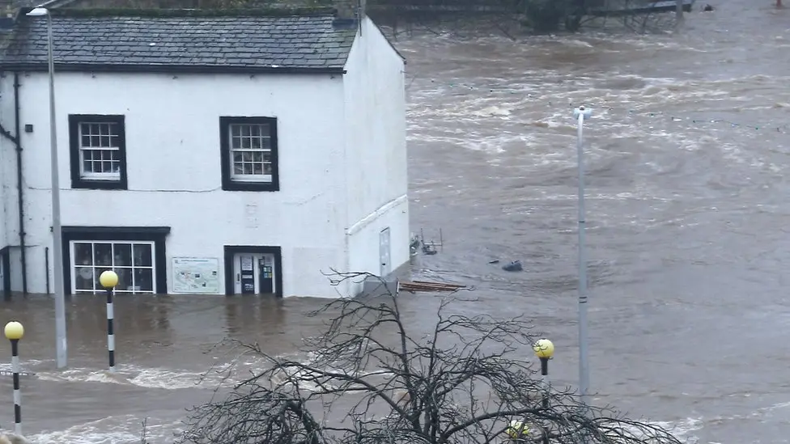
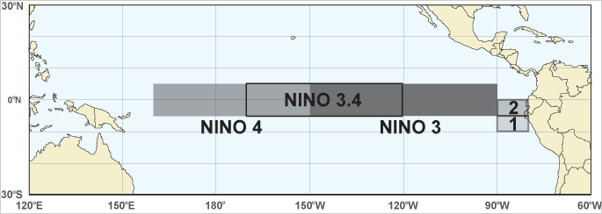
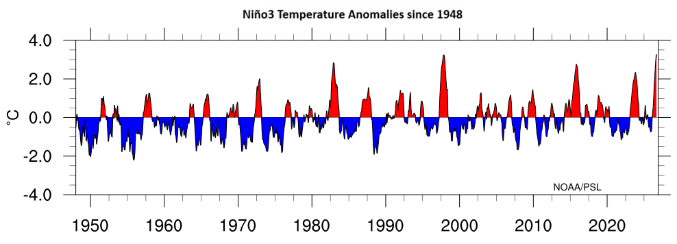
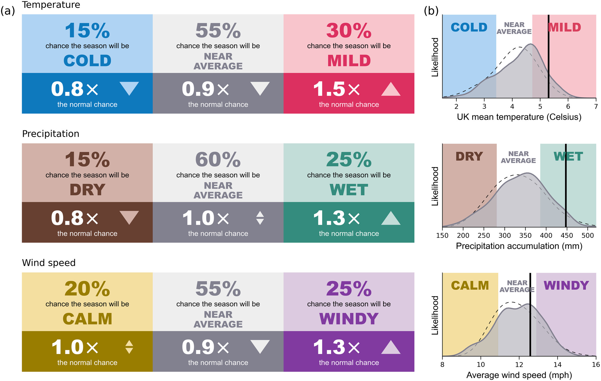
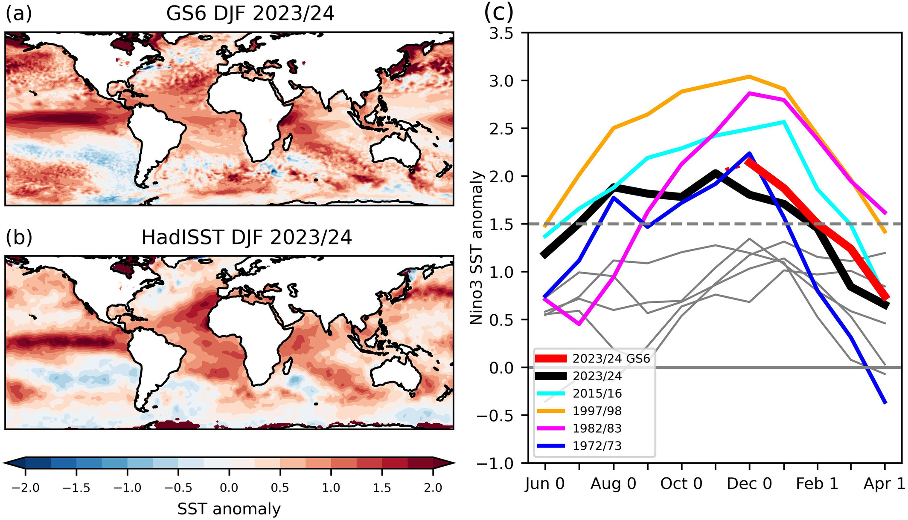
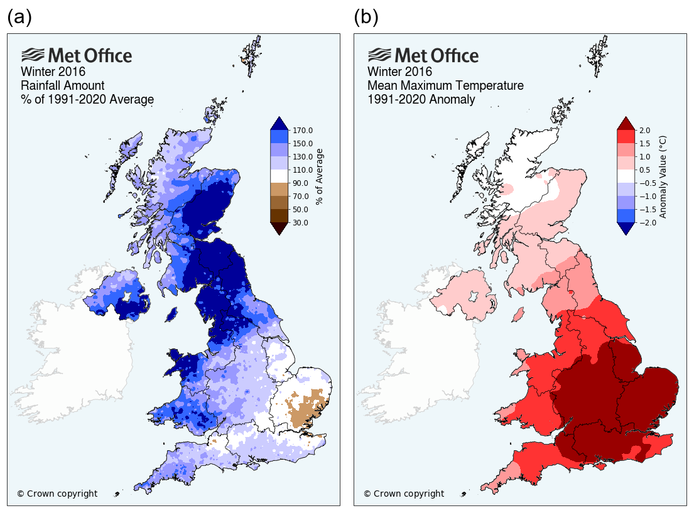

Super El Niño 2026: Risk of Mild, Wet and Stormy Weather This Winter Before Potential Late-winter Shift
Published 14 October 2026 | 11538036, The University of Manchester

A strong El Niño, a phase of the naturally occurring El Niño-Southern Oscillation (ENSO) climate cycle caused by warming of the tropical Pacific Ocean, increases the likelihood of wet and stormy early UK winter weather followed by uncertain late-season conditions.
The warming of the Pacific Ocean has reached its highest level on record, exceeding the last strong El Niño in 2023/24 and the very strong event in 2015/16.[NOAA link]
What Actually Is El Niño?
El Niño is the warm phase of a naturally occurring climate cycle known as the El Niño-Southern Oscillation (ENSO). Caused by ongoing oceanic and atmospheric interactions, the cycle usually lasts between three to seven years, alternating between warm El Niño and cool La Niña phases alongside neutral conditions. The mechanism behind the cycle is shown in Figure 2 [LINK].

The ENSO cycle depends on wind patterns and sea-surface temperatures (SSTs) across the tropical Pacific Ocean, as illustrated in Figure 2 [LINK]. Under normal conditions, trade winds blow from east to west, pushing warm surface water towards Australia and Indonesia. During an El Niño event, atmospheric pressure shifts cause these winds to weaken and sometimes even reverse direction, allowing warm water to move back eastward across the Pacific towards South America instead. This change in ocean surface heat alters atmospheric convection, driving global weather disruptions, as shown in Figure 2 (How El Niño forms, 2017).

To monitor the ENSO cycle, scientists measure sea surface temperatures across a region of the Pacific known as Niño3, shown in Figure 3. Temperature differences compared to long-term averages are called anomalies. The size of this anomaly indicates how severe global weather disruptions are likely to be, summarised in Figure 4 and Table 1 [LINK].

| Intensity | Niño3 SST anomaly (°C) |
|---|---|
| Weak | < 0.83 |
| Moderate | 0.83 < Niño3 < 1.5 |
| Strong | > 1.5 |
Recent measurements show that monthly average SSTs in the Niño3 region reached +3.25°C, representing the highest recorded anomaly for an El Niño season (NOAA, 2026a). NOAA forecasts this ocean warming to peak in December, as shown in Figure 5, raising the likelihood that the most active UK storm period will occur during early winter.

What to Expect This Winter
Pacific Ocean SST observations indicate a strong El Niño developing, peaking around December 2026. Between six and three months before peak ocean warming, forecast error margins halve, giving meteorologists increasing confidence in their predictions as winter approaches.
However, predicting specific UK weather impacts remains challenging because of interference from other atmospheric processes and the small scale of the UK compared to the globe as a whole [ATMOS COMPLICATIONS LINK]. Also, the unprecedented Pacific warming in 2026 means there are few historical comparisons to guide predictions.
From early winter (October to December), forecasts indicate raised odds of low pressure dominated by westerly winds [COMPLICATIONS LINK - NOA]. This makes frequent storms and heavy rainfall likely across the UK.
By late winter (January and February), predictions become less reliable. Generally, El Niño events experience a shift to high pressure conditions, bringing calm, cold weather to the UK. However, especially strong El Niño events sometimes avoid this pattern. During winter 2023/24, stormy weather in December gave way to a calm January, followed by record warmth and rainfall in February. This shows how difficult accurately predicting these events can be.
Last Time: Forecast Vs Reality for the 2023/24 El Niño
The 2023/24 winter is a good case study to evaluate effectiveness of seasonal models at predicting UK El Niño impacts. Pacific Ocean warming of 1.7°C in the Niño3 [LINK TO FIGURE] region between December and February defined it as a strong El Niño, as seen in Figure 7 [FIG7 LINK].
The Met Office winter predictions, shown in Figure 6 [LINK], correctly anticipated raised odds of mild and wet conditions, with winter temperatures and total rainfall landing in the top 20% of historical observations, matching predictions.

However, the winter forecast missed key local details during late winter. The frequent storminess of the early winter was well predicted, with seven named storms between late October and early January. However, February was especially wet and mild, which wasn't well forecast. Low-pressure [NOA LINK] storm systems travelled further south across the Atlantic than models expected, causing the warmest ever February for England and Wales alongside the wettest February in southern England.
The late-season deviations happened because of complicated and unpredictable interactions between El Niño and other atmospheric processes. While ocean warming was the main cause of the winter weather, other processes interfered during February to cause the rainfall anomalies (Ineson et al., 2026).
The UK was severely impacted. Flooding, transport disruption, power outages, and agricultural damage all occurred due to high rainfall and windspeeds, with nine named storms, shown in Table 2, across the extended winter season (October to March) [LINK TO TABLE 2] only beaten by 2015/16, another strong El Niño year (Kew et al., 2024).
| Name | Date of UK/Ireland/Netherlands Impact |
|---|---|
| Babet | 18-21 October 2023 |
| Ciarán | 1-2 November 2023 |
| Debi | 13 November 2023 |
| Elin | 9 December 2023 |
| Fergus | 10 December 2023 |
| Gerrit | 27-28 December 2023 |
| Henk | 2 January 2024 |
| Isha | 21-22 January 2024 |
| Jocelyn | 23-24 January 2024 |
Although 2023/24 is the most recent strong El Niño, ocean warming in the Niño3 region averaged 1.7°C from December to February (DJF). In contrast, 2026 has recorded a September monthly anomaly of 3.25°C, with values expected to peak in December [FIG5 link]. Due to this extreme warming, the 2015/16 event may be a more relevant comparison, with a higher peak Niño3 warming of around 2.5°C, as shown in Figure 3 [FIG7 LINK].

The 2015/16 El Niño produced an exceptional UK winter, breaking climate records and causing severe flooding and damage from high winds. A sequence of winter storms brought persistent rainfall including record 24-hour and 48-hour rainfall totals during Storm Desmond in December. Temperatures were also abnormally mild through December and January, showing how powerful El Niño events can suppress the intraseasonal shift to colder, clearer weather (McCarthy et al., 2016). Figure 8 [FIG8 LINK] shows these precipitation and temperature anomalies.

Cockermouth in Cumbria was among the worst-affected communities during winter 2015/16. On 5 December 2015, 36 hours of intense rainfall overwhelmed local flood defences, damaging nearly 500 properties, and causing a fatality. As shown in Figure 8 [FIG8 LINK], north-west England received over 170% of its average seasonal rainfall between December and February (BBC News, 2016).
How to Prepare for El Niño in the Uk This Winter
Severe winter weather brings widespread risks of flooding, structural wind damage and transport disruption to the UK. To help households prepare for severe weather, the British Red Cross recommend taking these precautions (British Red Cross, 2026).
Flooding:
- Check flood risks in your area and ensure sign up for official flood warnings. Follow guidance on preparing for and responding to flooding.